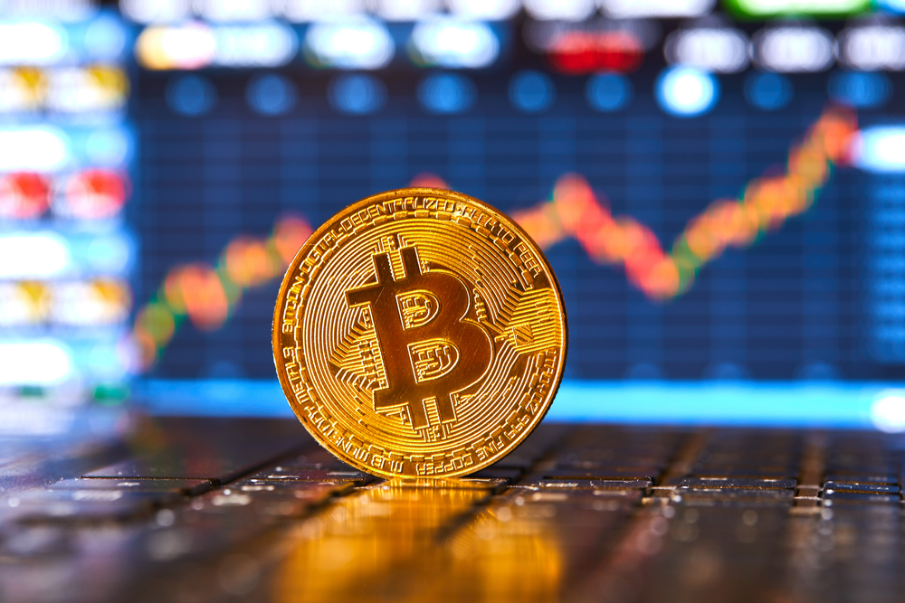
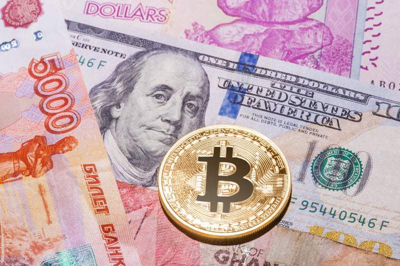
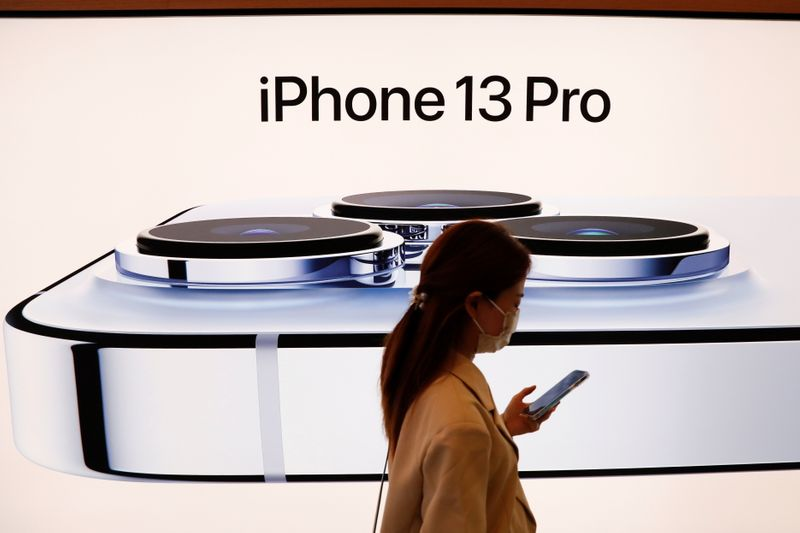
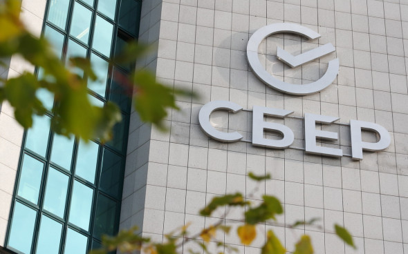

Новости

MicroStrategy вложила в биткоин еще $82 млн
MicroStrategy потратила еще $82 млн на покупку 1 434 биткоинов, объявил основатель компании в четверг.Согласно отчетности для Комиссии по ценным бумагам и биржам США, покупка была совершена в период с 29 ноября по 8 декабря. Средняя цена приобретения биткоина составила $57 477. Таким образом, большая часть вложений была сделана до снижения рынка на прошлой неделе, когда цены криптовалюты опускалась ниже $46 000. Покупка финансировалась за счет продажи собственных акций, уточняет компания в заявлении.
По состоянию на 8 декабря MicroStrategy владела 122 478 BTC стоимостью свыше $6 млрд, что является крупнейшей позицией среди всех публичных образований. Всего с середины прошлого года MicroStrategy вложила в биткоин $3,66 млрд, а средняя цена покупки составила $29 861.
В третьем квартале MicroStrategy добавила в резервы почти 9 000 BTC. В конце ноября компания объявила, что за два месяца вложила в биткоин $414 млн.

Конфискация крипты
Генпрокуратура России работает над законами, регулирующими обращение криптовалют, сообщает РИА Новости со ссылкой на заявление главы ведомства Игоря Краснова.«Нами разработаны изменения в ряд нормативных правовых актов для того, чтобы находящиеся в незаконном обороте криптовалюты не только признавались предметом преступления, но и имелась юридическая возможность их ареста и конфискации», — сказал он.
Новый финансовый директор OpenSea Брайан Робертс опроверг информацию о планах NFT-маркетплейса провести IPO. По его утверждению, в случае принятия подобного решения компания постарается учесть интересы сообщества.

Капитализация Apple приблизилась к $3 трлн
Акции компании Apple установили очередной исторический максимум после роста на 0,95%. Стоимость бумаг достигла $176,75 за акцию в начале торгов на бирже NASDAQ.Общая капитализация технологического гиганта составила $2,9 трлн. К 19:24 мск рост замедлился до 0,05%, а цена опустилась к $175,17.
В этом году акции Apple подорожали примерно на 35% после роста на 80% в 2020 году. Для сравнения, индекс S&P 500 вырос на 26% за 2021 год. Капитализация Apple достигла отметки в $1 трлн 2 августа 2018 года. Она стала первой компанией в США с такой рыночной стоимостью. Компании требовалось еще примерно два года, чтобы увеличить капитализацию с $1 трлн до $2 трлн. Этот рекорд был поставлен чуть более года назад, в августе 2020 года.
В среду, 8 декабря, компания получила отсрочку на внедрение альтернативных систем оплаты в App Store. Она должна была исполнить решение суда по иску, поданному разработчиком игр Epic Games. Приложение гейм-студии было удалено после того, как Epic добавила в игру функции оплаты в обход App Store. Разработчик объяснил свои действия слишком высокой комиссией за транзакции в магазине — она достигает 30%.
Бумаги «Соллерс» взлетели на 7%.
Котировки «Соллерс Авто» в моменте выросли на 7,98%, до ₽238,5. К 18:30 бумаги практически растеряли весь свой рост и откатились к отметке ₽224,5. Об этом свидетельствуют данные торгов.Рост акций начался после того, как совет директоров одобрил выкуп 1,7 млн акций группы, составляющих 5% от общего объема ценных бумаг , по ₽240,5 за штуку. Об этом сообщается на сервере раскрытия информации.
Таким образом, общая сумма программы составит почти ₽412 млн. Согласно опубликованным данным, заявления акционеров о продаже акций будут приниматься с 1 по 31 января 2022 года включительно.

Сбербанк потерял более 20% стоимости с октября.
Среда, 8 декабря, отметилась масштабными распродажами на российском фондовом рынке — индекс Мосбиржи потерял более 2%. Больше всего из бумаг крупных российских компаний просели акции Сбербанка — по итогам дня обыкновенные акции обвалились на 5,88%. Это самое значительное снижение бумаг с марта 2020 года. Привилегированные акции потеряли 4,13%.На основной торговой сессии 9 декабря котировки обыкновенных акций отскочили, отыграв часть потерь предыдущего дня. На 15:00 мск акции росли на 2,3%, до ₽303,85 за бумагу. Привилегированные акции дорожали на 0,84%, до ₽283,07 за бумагу.